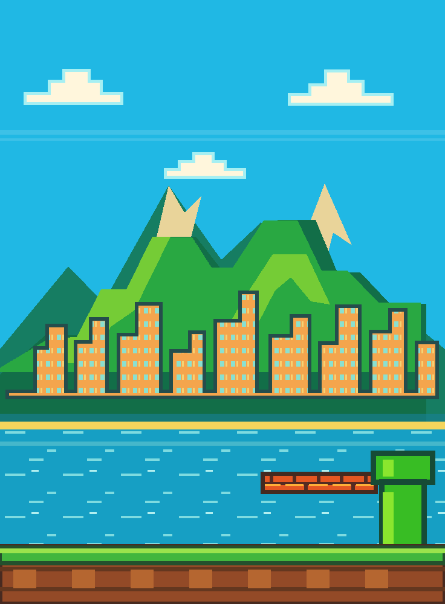

OI, EU SOU O ANDERSON!
Analista de Sistemas Pl na CVCCorp, em Santo André — SP. Gosto de investigar problemas, entender sistemas e aproximar tecnologia das pessoas.
UM LINKTREE EM MODO AVENTURA
LEONI
Oi! Sou analista de sistemas e este é meu cantinho na internet.
Escolha um bloco ou veja o personagem encontrar cada parada.

Analista de Sistemas Pl na CVCCorp, em Santo André — SP. Gosto de investigar problemas, entender sistemas e aproximar tecnologia das pessoas.
Experimentos e ferramentas que venho construindo.
Investigo incidentes, analiso dados com SQL e MongoDB, valido integrações e documento soluções em parceria com as equipes de negócio e desenvolvimento.
TOQUE NOS BLOCOS PARA EXPLORAR ↑